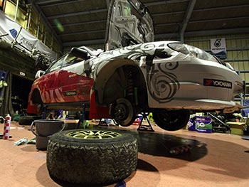
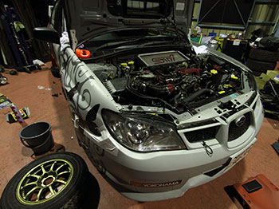
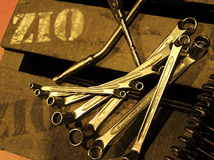

アライメント測定・調整
車がまっすぐ走らない・タイヤの偏摩耗が気になる・サーキットでタイムアタックしたい
経験豊かなスタッフが対応いたします
アライメント測定・調整

タイヤやサスペンションの性能を発揮するためにそれぞれ適正な取り付け角度が設定されています。しかし、その取り付け角度は走っていると少しずつズレが発生します。
ズレたままにしておくとハンドルを真っ直ぐにしているはずなのに車が左右に流れていってしまったり、タイヤが偏摩耗してしまったりといろいろなところに影響が発生します。
症状が悪化する前にアライメント調整を行うことで症状の緩和や改善を行うことが可能です。
作業の内容

当店では以下のような流れでアライメント測定・調整を行います
- 空気圧測定・調整
- タイヤの空気圧を測定・調整し、より正確にアライメント測定を行う準備をします
- 計測・診断
- 4輪アライメントテスターを利用し、お客さまの車両のアライメントの状態を測定します
- 調整
- お客さまのご利用用途に応じてベストのセッティングに調整を行います
- テスト走行
- テスト走行を行い、症状の改善具合や異音の有無など異常がないか確認を行います
- 走行後チェック
- ハンドルセンターの調整などのチェックを行います。調整が完了するまで走行とチェックを行います。
プライスリスト・作業時間

価格・作業時間はタイヤ数によって変わります。
- 作業時間：2時間〜
- 価格：25,000円〜
ご注意事項
- 測定可能なホイールサイズは13インチ〜20インチです
- 極端に低車高のお車・大型車両（トラックなど）は調整できない場合がございます
- 一部車種において調整が出来ない部分があります。一度ご相談ください
お支払い
現金でのお支払い以外に、VISA・マスターカード・アメックスの各種クレジットカードもご利用いいただけます。
その他、アプラスローンではご利用時にTポイントもついてさらにお得に！